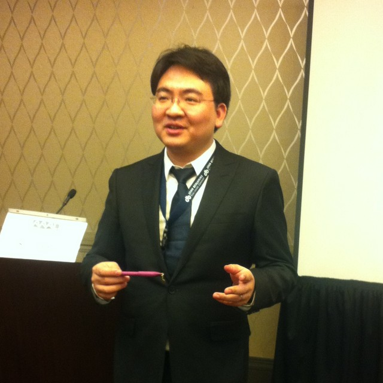

收录于合集
以下文章来源于何凯文考研英语 ，作者何凯文
 何凯文考研英语 .
何凯文考研英语辅导账号
四六级你可能花的时间多结果不见得理想，所以我一直主张通过考研兼容四六级。考前听下我的临门一脚和冲刺课就可以了，往往结果还不错。即使不理想我们再来一次就好了。不要太刻意。但考研就不一样了。考研必须全心投入！一战成功！
今天的句子：
European politicians believe the situation is further complicated by domestic hard line political and media pressure in the UK, which they argue makes compromise difficult and reinforces the feeling in London that the country will simply get whatever it wants.
词汇突破：1.hard line 强硬态度
2. compromise 妥协
3. reinforce 加强
4. simply用于强调语气(used to emphasize what you are saying)，故 在这里翻译成“完全”，而非“简单地”。
确定主干：European politicians believe
切分成分：1.the situation is further complicated by domestic hard line political and media pressure in the UK 宾语从句主句
2. which they argue makes compromise difficult and reinforces the feeling in London 定语从句一
3. that the country will simply get whatever it wants 同位语从句
独立成句：2.which they argue makes compromise difficult and reinforces the feeling in London.
Which=前面的整个句子，=this 翻译为“这”
they argue this makes compromise difficult and reinforces the feeling in London.
3. the country will simply get whatever it wants 补充说明feeling
参考译文：欧洲政客认为英国国内强硬的政治和媒体压力进一步令形势复杂 化，他们认为这将使和解难于达成，并加强伦敦（英国）的一种感觉：以为自己想要什么就完全可以得到什么。
重要背景介绍：
去年的2月20日，英国前总理卡梅伦正式宣布了脱欧公投的时间：2016年6月23日。现在掷地有声的梅姨已上任多日，英国脱欧公投带来的剧烈市场波动也平复多时，但脱欧谈判仍未正式开始，里斯本条约第50条还未触发，英国向欧盟递交退出申请的日期尚不明确。面对一些人对脱欧能否真正推进的质疑，梅姨曾坚定表示“脱欧即脱欧”（Brexit is Brexit），不会藕断丝连。脱欧是一个十分浩大且艰难的工作。首先，英国政府对此毫无经验，缺少专业人员准备。其次，欧盟不会让英国轻而易举地退出。欧盟近日就表示禁止英国在脱欧未完成前与任何包括欧盟成员国在内的国家开启双边贸易谈判。这意味着英国将出现对外贸易政策不明朗的“断崖期”，很多外国企业可能因此选择退出英国。再者，英国需向欧盟支付巨额债务。虽然支持退欧的人一直宣称脱欧后英国人可省下巨额会费，用于国内民生项目。但欧盟认为虽然英国即将退出，也应如数上交正式退出前的会费及欠款，索要“分手费”600亿欧元。
明天的句子：
Nobody disputes that the loss of manufacturing has left a bruising mark in parts of the U.S., especially in places like the Rust Belt, where lower paying service industry jobs are increasingly replacing middle class factory positions.
刚来的同学可以看之前的句子可以看下面的链接：
第五句：你赢，我陪你君临天下！你输，我陪你东山再起！
第六句：国家分数线和34所高校分数线公布时间
第八句：很棒的一次直播17和18都可以看！
第九句：考研失利的原因+lalaland 爱乐之城
第十句：复试自我介绍语料+法国大选
在前面就看历史消息了。